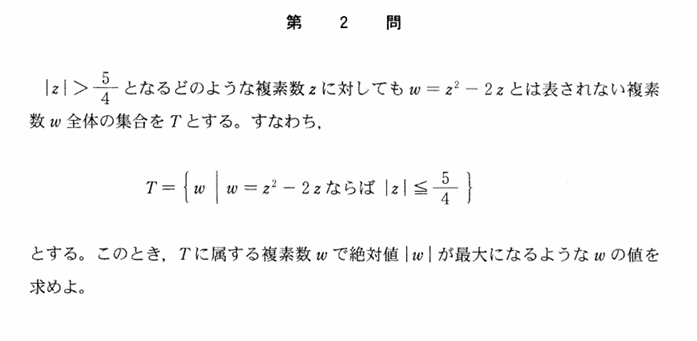

2005年 第2問
複素数平面

分析
問題文の正しい理解をするのが難しい問題である。立ち向かう問題の意味を正しく把握することが非常に重要な問題で、それができないと違う問題を解くことになり、0点となる。問題解釈が難しいと作問者も思ったのか、わざわざ問題を言い換えてくれている。しかしそれでもなお難解である。
この問題の解釈が難しい要因に、複素数平面の問題の経験から$\ |\omega|^2\ $を計算するなどと言ったことを思いつきやすいことがある。問題文の本質が理解できないと無意味な行動をする羽目になる。この問題は、あまり経験のないであろう、2次方程式の解と係数の関係の問題を複素数範囲に拡張したものであり、見知らぬ問題にどう立ち向かうかを思考する能力を問うことができている。
n次方程式は、複素数範囲においても解と係数の関係を用いることができ、これはかなり有用な武器である。